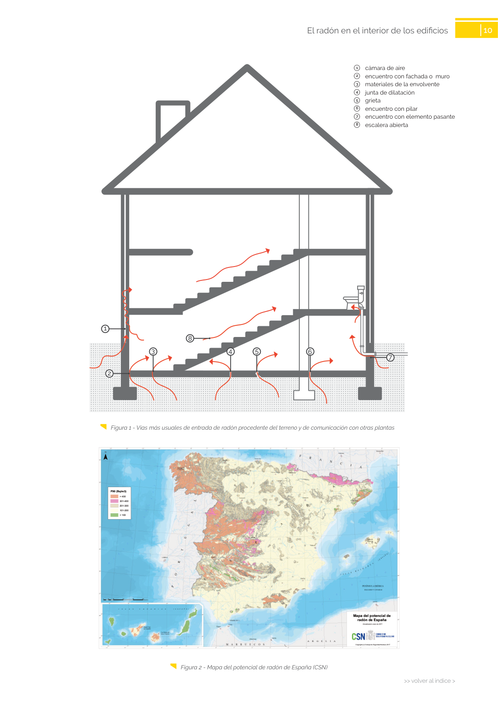

GUIA · 6 encuentro con pilar 7 encuentro con elemento pasante · versión sin-fecha · capa guia
Formatos: JSON compacto · Markdown · PDF fuente
Ámbito del documento · texto del ámbito · documento y tablas
Tipo: tablas, figuras · nivel 1 · sección estimada: 6 encuentro con pilar 7 encuentro con elemento pasante · padre:
6 encuentro con pilar 7 encuentro con elemento pasante 7 encuentro con elemento pasante

PDF fuente redistribuible: copia fiel enlazada en esta página (SHA256 verificado).